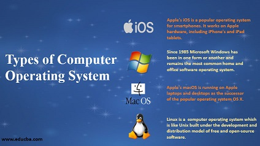

Operating Systems
SEMESTER 2
In this module after computer systems we are going deeper into operating systems especially servers. We are focusing on what an admin is doing day by day and what kind of problems we should encounter.
